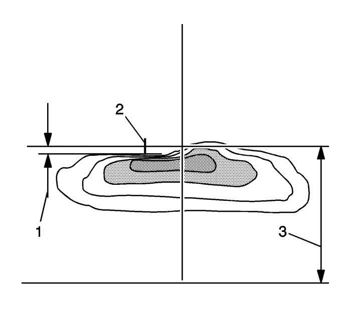
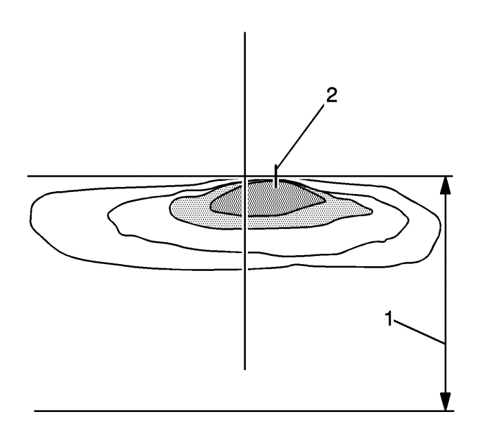

Enfoque de los faros
El vehículo dispone de un sistema de alineación de los faros óptico y visual. La alineación viene preconfigurada de fábrica y no necesita ningún ajuste posterior
No obstante, si el vehículo se daña en un accidente, es posible que la alineación de los faros se vea afectada y sea necesario ajustarla.
Si los vehículos que vienen de frente le hacen las luces largas, puede que signifique que debe ajustar la alineación vertical.
Se recomienda que lleve el vehículo a su concesionario para revisarlo si necesita volver a alinear los faros. Sin embargo, también es posible volver a alinear los faros del modo que se indica en el siguiente procedimiento.
El vehículo deberá prepararse correctamente del siguiente modo:
| • | El vehículo deberá colocarse de modo que los faros estén a 7,6 m (25 pies) de una pared de color claro u otra superficie plana. |
| • | El vehículo debe tener los cuatro neumáticos en una superficie perfectamente nivelada con la pared u otra superficie plana. |
| • | El vehículo deberá colocarse de modo que quede perpendicular a la pared u otra superficie plana. |
| • | El vehículo no deberá presentar nieve, hielo o barro. |
| • | El vehículo deberá estar totalmente montado y todas las demás reparaciones deberán detenerse mientras se realiza la alineación de los faros. |
| • | El vehículo deberá estar cargado normalmente con el depósito lleno de combustible y una persona de 75 kg (160 lib.) sentada en el asiento del conductor. |
| • | Los neumáticos deberán estar correctamente inflados. |
La alineación de los faros se realiza con los faros de la luz de cruce del vehículo. Los faros de la luz de carretera quedarán bien alineados si los faros de la luz de cruce se alinean correctamente.
- Para ajustar la alineación vertical de los faros, haga lo siguiente:
- Localice los puntos de alineación de las lentes del conjunto de la luz.
- Mida la distancia que hay desde el suelo hasta el punto de alineación de la luz con el capó cerrado. Registre la distancia.
- En la pared u otra superficie plana, mida la distancia registrada desde el suelo hacia arriba y dibuje o marque con cinta una línea horizontal a lo largo de la anchura del vehículo.
Atención: No cubra ninguno de los faros para mejorar el corte del faro durante la alineación. Si se cubre uno de los faros, se podría crear un calor excesivo, dañando así el faro.
- Gire los faros de luz de cruce y coloque una pieza de cartón o equivalente enfrente del faro que no se está alineando. Esto permitirá que sólo se vea el haz de luz del faro que se está alineando sobre la superficie plana.

- Ajuste el tornillo de ajuste vertical del faro hasta que el punto caliente (centro de masa de la zona brillante) quede 8,0 pulgadas (2) por debajo del acceso horizontal del faro (1), en un intervalo de +/- 2 pulgadas cuando se mide a 25 pies.

- Ajuste el tornillo de ajuste vertical del faro hasta que la línea gradiente derecha (línea de corte) quede en el eje horizontal en un intervalo de +/- 2,0 pulgadas (2), medida a 25 pies.
- Repita los pasos 5, 6 y 7 para alinear el otro faro.
| © Copyright Chevrolet Europe. All rights reserved |